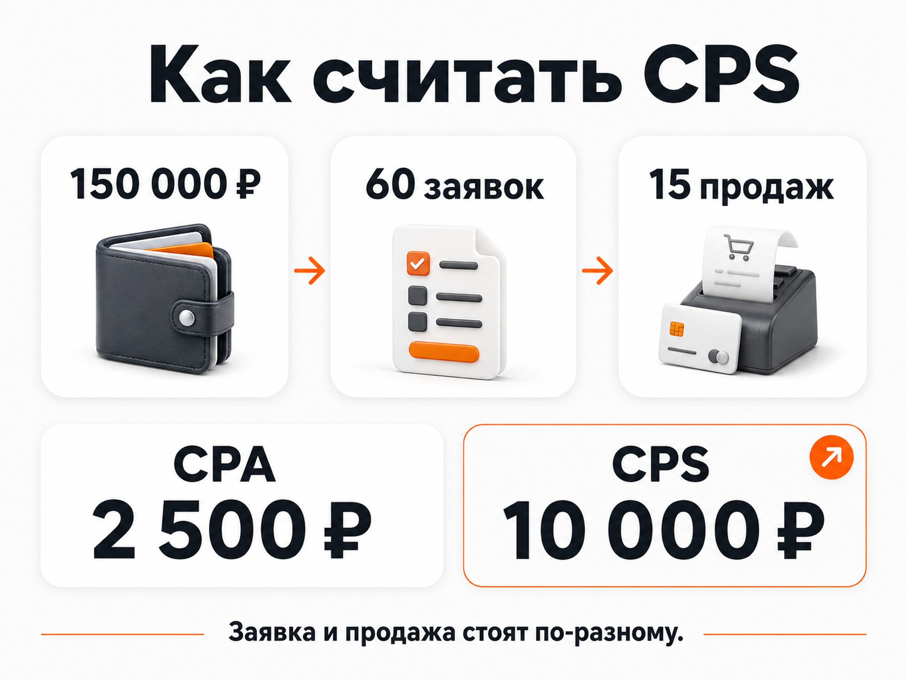
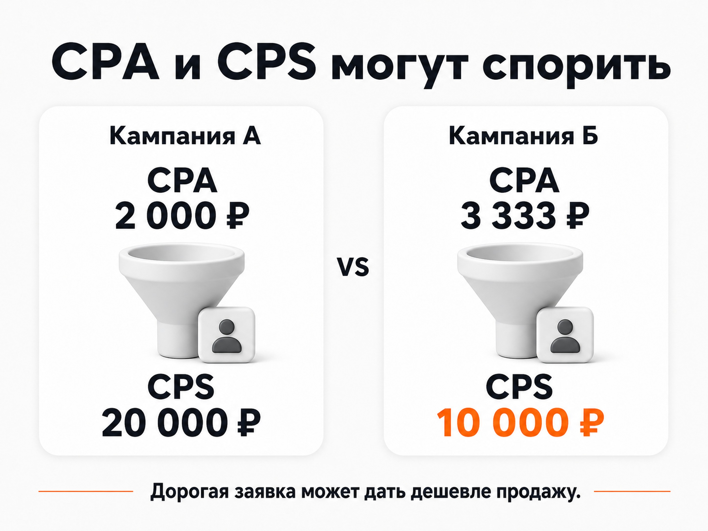
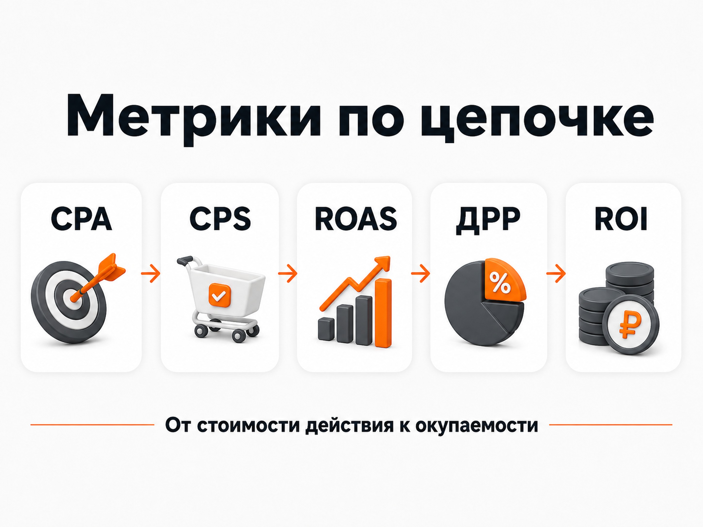

Блог о платном трафике
CPS в маркетинге: что это и как считать стоимость продажи
CPS в маркетинге показывает, сколько рекламных денег в среднем потребовалось, чтобы получить одну продажу.
Расшифровывается CPS как Cost Per Sale - стоимость продажи.
Формула простая:
CPS = расходы на рекламу / количество продаж
Например, на рекламу потратили 100 000 ₽ и получили 10 продаж:
100 000 / 10 = 10 000 ₽.
CPS составляет 10 000 ₽.
Для бизнеса этот показатель часто полезнее стоимости заявки. Заявка еще может оказаться нецелевой, клиент может отказаться или менеджер не сможет закрыть сделку. CPS считает результат значительно ближе к деньгам - состоявшуюся продажу.
Яндекс также определяет CPS как среднюю стоимость продажи или выкупа товара и рассчитывает показатель через отношение расходов к количеству продаж.
Что такое CPS простыми словами
Представим обычную рекламную воронку:
реклама -> переход на сайт -> заявка -> обработка менеджером -> продажа.
На каждом этапе можно считать свою стоимость.
Переход оценивается через CPC, заявку можно оценивать через CPA или CPL, а конечную продажу - через CPS.
Поэтому CPS отвечает на очень конкретный вопрос:
сколько рекламного бюджета пришлось потратить, чтобы получить одного реально купившего клиента?
Термин также используется как название модели оплаты в партнерском маркетинге, когда рекламодатель платит партнеру именно за совершенную продажу. Но при анализе собственных рекламных кампаний меня в первую очередь интересует CPS именно как показатель эффективности.
Как рассчитать CPS
Для базового расчета нужны два значения за один и тот же период:
- расходы на рекламу;
- количество продаж, полученных благодаря этой рекламе.
Формула:
CPS = рекламные расходы / продажи
Допустим, за месяц Яндекс Директ потратил 150 000 ₽.
Из рекламы получили 60 заявок, из которых 15 завершились продажей.
Расчет:
150 000 / 15 = 10 000 ₽.
Стоимость одной продажи составила 10 000 ₽.
При этом стоимость заявки:
150 000 / 60 = 2 500 ₽.
Получается две разные метрики одной воронки:
CPA заявки - 2 500 ₽.
CPS - 10 000 ₽.
Обе цифры правильные. Просто они отвечают на разные вопросы.

CPS и CPA - в чем разница
CPA расшифровывается как Cost Per Action - стоимость целевого действия.
Таким действием может быть заявка, звонок, регистрация, заказ или даже непосредственно покупка. Поэтому CPS фактически является более узкой разновидностью CPA, где целевым результатом считается именно продажа.
| Метрика | Что считаем | Формула | Что показывает |
|---|---|---|---|
| CPA | Целевое действие | Расходы / действия | Сколько стоит выбранная конверсия |
| CPS | Продажу | Расходы / продажи | Сколько стоит получение одной продажи |
В лидогенерации под CPA чаще всего имеют в виду стоимость заявки.
Например:
30 заявок при расходах 60 000 ₽ дают CPA 2 000 ₽.
Если из этих заявок получилось 6 продаж:
CPS = 60 000 / 6 = 10 000 ₽.
Поэтому фраза «у нас заявки по 2 000 ₽» сама по себе еще почти ничего не говорит об экономике рекламы.
Подробнее - в статье «CPA в Яндекс Директе: что это и как считать стоимость конверсии».
Почему стоимость продажи зачастую важнее стоимости заявки
Одна из самых частых ошибок при оценке рекламы - оптимизировать кампании только по цене заявки.
Представим две рекламные кампании.
Кампания А
Расходы - 100 000 ₽.
Получено 50 заявок.
Продаж - 5.
CPA заявки:
100 000 / 50 = 2 000 ₽.
CPS:
100 000 / 5 = 20 000 ₽.
Кампания Б
Расходы - те же 100 000 ₽.
Получено всего 30 заявок.
Продаж - 10.
CPA:
100 000 / 30 = 3 333 ₽.
CPS:
100 000 / 10 = 10 000 ₽.
Если смотреть только на заявки, кампания А кажется намного эффективнее: 2 000 ₽ против 3 333 ₽.
Но бизнес получает совершенно обратный результат.
В кампании Б заявка дороже, зато стоимость реальной продажи в два раза ниже.
Причина - качество обращений.
В кампании А в покупку превращаются только 10% заявок:
5 / 50 × 100% = 10%.
В кампании Б:
10 / 30 × 100% = 33,3%.
Именно поэтому я стараюсь по возможности смотреть рекламу дальше заявки. Дешевый лид совершенно не обязательно является дешевым клиентом.

Как связаны CPA заявки и CPS
Если известна конверсия заявки в продажу, CPS можно приблизительно рассчитать даже через CPA.
Формула:
CPS = CPA / конверсия заявки в продажу
Конверсию здесь нужно использовать в виде доли.
Например:
CPA заявки - 2 000 ₽.
В продажу превращается 20% обращений.
Расчет:
2 000 / 0,2 = 10 000 ₽.
Примерный CPS равен 10 000 ₽.
Если менеджеры начинают продавать только 10% лидов:
2 000 / 0,1 = 20 000 ₽.
Реклама продолжает приносить заявки по тем же 2 000 ₽, а стоимость продажи увеличилась в два раза.
Поэтому изменение CPS зависит уже не только от рекламной кампании.
На него влияют:
- качество рекламного трафика;
- предложение;
- сайт;
- качество самих заявок;
- скорость обработки обращений;
- работа отдела продаж;
- цена и условия покупки;
- доля отказов и отмененных заказов.
Это уже показатель всей цепочки от рекламы до сделки.
CPS и CPO - это одно и то же?
Не всегда.
CPO расшифровывается как Cost Per Order - стоимость заказа.
CPS - Cost Per Sale - стоимость продажи.
Яндекс также разделяет эти показатели: CPO используется для полученного заказа, CPS - для продажи или выкупа товара.
Для интернет-магазина разница может быть существенной.
Например:
100 человек оформили заказ.
20 заказов отменили или не выкупили.
Фактических продаж осталось 80.
Если рекламные расходы составили 100 000 ₽:
CPO = 100 000 / 100 = 1 000 ₽.
CPS = 100 000 / 80 = 1 250 ₽.
Поэтому заранее нужно определить, какое событие компания считает продажей: оформление заказа, оплату, выкуп или закрытую сделку в CRM.
Главное - использовать одно и то же определение при сравнении периодов и рекламных каналов.
Как понять, хороший CPS или плохой
Универсального нормального CPS не существует.
Стоимость продажи в 10 000 ₽ может быть отличным результатом для одного бизнеса и убыточным для другого.
Сравнивать ее нужно с экономикой конкретного продукта.
На результат влияют:
- средний чек;
- маржинальность;
- переменные затраты;
- повторные покупки;
- прибыль с клиента;
- допустимые расходы на его привлечение.
Допустим, товар продается за 20 000 ₽.
После себестоимости и других переменных расходов с продажи остается 8 000 ₽ до учета рекламы и постоянных расходов.
Если CPS составляет 10 000 ₽, первая продажа уже не покрывает рекламные расходы.
Если CPS равен 3 000 ₽, запас значительно больше.
При этом одного CPS все равно недостаточно, чтобы окончательно оценить прибыльность бизнеса. Он показывает цену получения продажи, но ничего не говорит о размере выручки от нее.
Для этого нужны следующие метрики в цепочке.
CPS, ROAS, ДРР и ROI - что показывает каждая метрика
CPS логично находится между стоимостью конверсии и показателями окупаемости.
Условно цепочку можно представить так:
CPA -> CPS -> ROAS -> ДРР -> ROI
CPA показывает стоимость действия.
CPS - стоимость продажи.
ROAS - сколько выручки принес каждый рубль рекламных расходов.
ДРР - какую долю выручки съела реклама.
ROI - насколько окупились вложенные средства с учетом полученного результата.
Например, CPS может составлять 5 000 ₽ одновременно у двух рекламных кампаний.
Но первая продает товар за 7 000 ₽, а вторая - за 30 000 ₽.
Стоимость продажи одинаковая, а экономика совершенно разная.
Поэтому CPS хорошо отвечает на вопрос «сколько стоит клиентская покупка», но сам по себе еще не отвечает на вопрос «выгодна ли реклама».

Как правильно считать CPS в реальной рекламе
Сама формула занимает одну строку. Основные ошибки возникают в данных.
Считайте только реальные продажи
Если задача - узнать стоимость продажи, я бы не смешивал ее с заявками, бронированиями и неподтвержденными заказами.
Для интернет-магазина разумно учитывать оплаченные или выкупленные заказы в зависимости от бизнес-модели.
Для услуг - сделки, которые компания действительно считает продажей.
Сопоставляйте одинаковые периоды
Нельзя взять рекламные расходы за август и разделить их только на сделки, которые успели закрыться до 31 августа, если обычный цикл продажи занимает месяц.
Особенно это критично для недвижимости, B2B, медицины, строительства и других ниш с длинным принятием решения.
Часть августовских заявок может превратиться в продажи только в сентябре или октябре.
Используйте данные CRM
Рекламная система хорошо видит клики и онлайн-конверсии, но не всегда знает, чем закончилась работа менеджера.
Если продажа происходит после звонков и переговоров, данные нужно связывать с CRM и аналитикой.
Чем дальше получается проследить цепочку
реклама -> заявка -> квалифицированный лид -> продажа,
тем полезнее становится оценка рекламы.
Не смешивайте разные методики расчета расходов
Если для одной кампании в CPS включается только рекламный бюджет, а для другой еще работа специалиста, CRM и коллтрекинг, сравнение будет некорректным.
Для оценки именно рекламного канала обычно удобно считать:
рекламные расходы / продажи из этого канала.
Если нужно учитывать все расходы компании на привлечение клиента, задача уже становится шире и ближе к расчету CAC.
Как использовать CPS при оптимизации рекламы
Я бы смотрел на CPS вместе с CPA и конверсией заявки в продажу.
Эти три цифры быстро показывают, на каком участке воронки возникла проблема.
Если вырос CPA и одновременно вырос CPS, вероятно, подорожало получение обращений.
Если CPA почти не изменился, но CPS резко вырос, нужно проверить качество лидов и конверсию отдела продаж.
Если CPS снизился при росте CPA, это вполне может быть хорошим результатом: реклама начала приводить меньше дешевых заявок, но больше покупателей.
Поэтому оптимизировать рекламу только ради минимального CPA не всегда правильно.
Конечная задача бизнеса - не получить максимальное количество форм на сайте, а привлекать покупателей по стоимости, при которой экономика сходится.
Что в итоге показывает CPS
CPS - это стоимость одной продажи, полученной с рекламы.
Формула:
CPS = рекламные расходы / количество продаж.
Метрика полезна тем, что находится значительно ближе к реальному результату бизнеса, чем стоимость клика или заявки.
Дешевый CPA может выглядеть хорошо в рекламном отчете, но если большинство обращений не превращается в покупателей, фактический CPS окажется высоким.
Поэтому после того, как реклама уже стабильно получает заявки, следующий логичный шаг в аналитике - связать их с реальными продажами и смотреть не только на стоимость обращения, но и на стоимость клиента.
А дальше CPS уже нужно оценивать вместе с выручкой, маржинальностью, ROAS, ДРР и ROI.